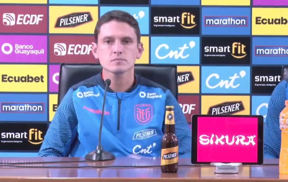

Título del articulo #1
«No es posible que el Atahualpa no tenga un sistema de respaldo», dijo el Ingeniero Eléctrico José Pileggi, presidente del Club Sport Emelec, a la periodista Lorena Espinoza de Área Deportiva FM de Quito.
«No es posible que el Atahualpa no tenga un sistema de respaldo», dijo el Ingeniero Eléctrico José Pileggi, presidente del Club Sport Emelec, a la periodista Lorena Espinoza de Área Deportiva FM de Quito.
Miguel Bravo habló con los medios posterior a la caída de Ecuador donde hubo un análisis al respecto. «Hay que reconocer que nos hemos enfrentado contra un gran rival. Estados Unidos juega muy bien, tiene un proceso bastante largo. Por momentos los controlamos bastante bien, por momentos nos faltó tener la pelota y tener posesiones más largas, donde somos fuertes. Nos faltó decidir mejor en los últimos metros”.
